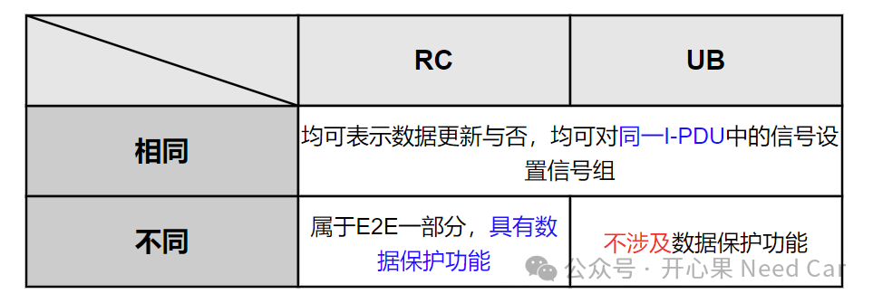
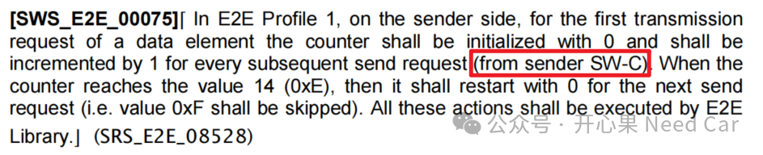
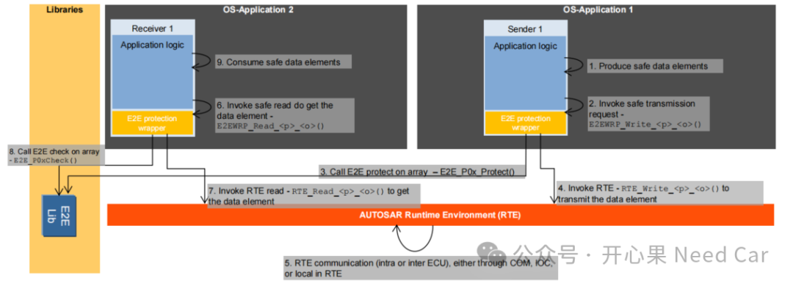

如标题，E2E中的RC（Rolling Counter）和COM的UB（Update Bit）是一回事吗？有人说，RC的更新和UB功能类似，都能表示信号的更新，那么，两者就是一回事了吗？到底应该如何理解RC和UB，两者功能是否重叠，本文着重聊一聊这个话题。
要讨论清楚RC和UB，我们就得先知道什么是RC，什么是UB。（一）UB是什么
RC（Rolling Counter），循环计数器。按照Autosar E2E规范解释，应该称为Counter。因为Autosar规范约定，Counter使用4个bit表示，所以，该值从0->15->0循环计数。发送端（Sender）每次对需要保护的数据（eg：信号组）进行E2E保护时，该计数器累加1，表征数据的更新。既然是保护数据，说明E2E和安全相关。工程中，使用E2E，多数是功能安全的要求，而且安全等级需要高于QM(Quality Management)。
所以，了解了两者的定义和用途，可以对两者的异/同进行总结，如下所示：

所以，个人理解：不能因为RC和UB均具有表示数据更新的功能，就将两者混为一谈，或者简单的认为两者可以替换。UB不属于功能安全的范畴，而RC属于功能安全范畴的一部分。
UB功能由COM模块控制，COM模块根据需求设置每个I-PDU的发送模式，发送模式包括：DIRECT、MIXED、NONE、PERIODIC。其中，如果一个I-PDU的配置模式是DIRECT（事件触发类型），则该I-PDU中的信号或者信号组不能配置UB。因为事件触发具有不确定性，即：Sender发送I-PDU具有不确定性，因此，Receiver不能有效的对接收的I-PDU进行E2E校验。E2E报文由谁发送呢？按照Autosar的解释，E2E报文由SW-C请求，最终通过RTE、COM向下发送。具体解释可以参考(1)：

在Autosar的规范中，已经给出了E2E报文的发送和接收流程，如下所示(2)：

上层SW-C根据各自的调度周期更新对应的数据（也就是信号，signal），生产（Produce）需要保护的数据；
SW-C调用配置生成的E2EWRP_Write_<p>_<o>()接口copy要发送的数据；
进一步调用E2E Lib中的E2E_P0x_Protect()接口进行数据的封装；
通过RTE调用RTE_Write_<p>_<o>()接口将数据发送到RTE中，之后数据可以在同一MCU，不同的OS-Application之间传输，或者传输给其他MCU。
（1）AUTOSAR_SWS_E2ELibrary.pdf（2）AUTOSAR_EXP_LayeredSoftwareArchitecture.pdf
点击下方关注，一起聊聊Autosar/嵌入式，如果需要，联系作者进群，给你更专业的解答